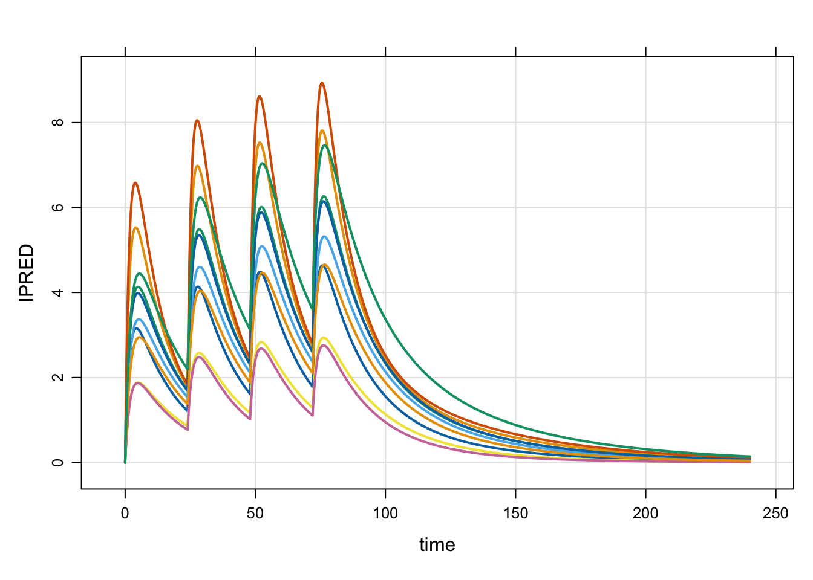

library(mrgsolve)Simulate from PKPD & QSP models in R 
Welcome to the online home for mrgsolve. mrgsolve is an R package for simulation from hierarchical, ordinary differential equation (ODE) based models typically employed in drug development. mrgsolve has been used for a wide variety of model applications, including pharmacokinetics (PK), pharmacokinetics/pharmacodynamics (PK/PD), physiologically-based pharmacokinetic (PBPK) modeling, and quantitative systems pharmacology. This site functions as a portal to all of the online resources that are available to help you learn mrgsolve and use it well to create useful simulations.
mrgsolve is free, open-source software
mrgsolve is distributed as a package for R and utilizes an ODE-solver from ODEPACK which is freely-available in the public domain. We develop mrgsolve on github, with input and contributions from the pharmacometrics modeling and simulation community. We welcome feature requests and bug reports on the GitHub site issue tracker. We also welcome questions about your model or simulation code on the discussion board.
Documentation
- User Guide: In-depth description and discussion about how mrgsolve works, including code block reference.
- Package documentation: This is the pkgdown site for mrgsolve, including usage vignettes.
- R documentation: All mrgsolve documentation that you would find in the
Rhelp system. - Doxygen documentation: How to use some of the provided C++ functions in your model.
- Vignette: A vignette to help you get started with mrgsolve, available in html or pdf format.
- Gallery: A GitHub repository of short, focused how-to vignettes.
- Dynamic dosing resources: this is a repository of examples illustrating how to dynamically. implement dosing regimens or other modeled events from inside your model code. Included is a vignette with ten fully-worked examples with source code and outputs.
- Quick hit demos: Features that you might have a hard time finding in other documentation.
Links and Resources
- Benchmarks: We simulate data for certain scenarios from both NONMEM and mrgsolve and compare the outputs. All the code needed to run or confirm the outputs is included in the git repository. mrgsolve does not match NONMEM in every way; but there is substantial overlap so that a wide variety of models estimated in NONMEM can be simulated in mrgsolve.
- GitHub Page: Browse source code, find useful examples, get help installing, report issues
- mrgsolve home on CRAN
- Metrum Research Group: Our main website
An example
The following is a simple example to illustrate the basics of how mrgsolve works. You can find more examples and usage vignettes in the links above or in the “Help Topics” menu in the nav bar at the top of the mrgsolve.github.io main page.
First, a model object is created. As an introduction, we will use a pre-coded model from an internal library.
mod <- modlib("1005")An overview about this model
mod.
.
. ----------------- source: 1005.cpp -----------------
.
. project: /Users/kyleb/ren...gsolve/models
. shared object: 1005-so-14d6964c515d6
.
. time: start: 0 end: 24 delta: 1
. add: <none>
.
. compartments: GUT CENT PERIPH [3]
. parameters: SEX WT THETA1 THETA2 THETA3 THETA4
. THETA5 THETA6 THETA7 [9]
. captures: CL Q V2 V3 KA ETA_1 ETA_2 ETA_3 IPRED [9]
. omega: 3x3
. sigma: 2x2
.
. solver: atol: 1e-08 rtol: 1e-08 maxsteps: 20k
. ------------------------------------------------------Next, let’s create an intervention for the model. We do this with an event object.
e <- ev(amt = 1000, ii = 24, addl = 3) %>% ev_rep(1:10)
e ID time amt ii addl cmt evid
1 1 0 1000 24 3 1 1
2 2 0 1000 24 3 1 1
3 3 0 1000 24 3 1 1
4 4 0 1000 24 3 1 1
5 5 0 1000 24 3 1 1
6 6 0 1000 24 3 1 1
7 7 0 1000 24 3 1 1
8 8 0 1000 24 3 1 1
9 9 0 1000 24 3 1 1
10 10 0 1000 24 3 1 1Now, we simulate with our model object (mod) and the event object (e)
set.seed(1234)
out <-
mod %>%
ev(e) %>%
mrgsim(end = 240, delta = 0.1)
out. Model: 1005
. Dim: 24020 x 14
. Time: 0 to 240
. ID: 10
. ID time GUT CENT PERIPH CL Q V2 V3 KA ETA_1 ETA_2
. 1: 1 0.0 0.0 0.000 0.00000 12.3 3.475 26.34 113.3 0.06432 0.2572 0.1449
. 2: 1 0.0 1000.0 0.000 0.00000 12.3 3.475 26.34 113.3 0.06432 0.2572 0.1449
. 3: 1 0.1 993.6 6.223 0.04145 12.3 3.475 26.34 113.3 0.06432 0.2572 0.1449
. 4: 1 0.2 987.2 12.044 0.16204 12.3 3.475 26.34 113.3 0.06432 0.2572 0.1449
. 5: 1 0.3 980.9 17.488 0.35642 12.3 3.475 26.34 113.3 0.06432 0.2572 0.1449
. 6: 1 0.4 974.6 22.577 0.61952 12.3 3.475 26.34 113.3 0.06432 0.2572 0.1449
. 7: 1 0.5 968.4 27.332 0.94662 12.3 3.475 26.34 113.3 0.06432 0.2572 0.1449
. 8: 1 0.6 962.1 31.772 1.33324 12.3 3.475 26.34 113.3 0.06432 0.2572 0.1449
. ETA_3 IPRED
. 1: -0.105 0.0000
. 2: -0.105 0.0000
. 3: -0.105 0.2362
. 4: -0.105 0.4572
. 5: -0.105 0.6638
. 6: -0.105 0.8570
. 7: -0.105 1.0375
. 8: -0.105 1.2061And plot
plot(out, IPRED ~ time) 
The source code for this model:
[ PROB ]
1005 phase1 2 CMT like 1004 but diff. initial on V3
Run
file.show(system.file("nonmem", "1005", "1005.ctl", package = "mrgsolve"))
for equivalent NONMEM control stream.
[ PKMODEL ] cmt = "GUT CENT PERIPH", depot = TRUE
[ INPUT ] SEX = 0, WT = 70
[ NMXML ]
project = system.file("nonmem", package = "mrgsolve")
run = "@cppstem"
[ PK ]
double CL = THETA(1)*exp(ETA(1)) * pow(THETA(6),SEX) * pow(WT/70.0,THETA(7));
double V2 = THETA(2)*exp(ETA(2));
double KA = THETA(3)*exp(ETA(3));
double Q = THETA(4);
double V3 = THETA(5);
double S2 = V2;
[ ERROR ]
double F = CENT/S2;
double Y = F*(1+EPS(1)) + EPS(2);
double IPRED = F;
[ CAPTURE ]
CL Q V2 V3 KA ETA(1) ETA(2) ETA(3) IPRED